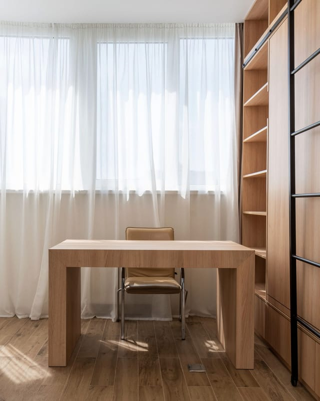

Cardiologia · São Paulo
Dr. Paulo de Tarso Lopes Pontes
Cardiologista. Atende adultos com palpitação, arritmia, fibrilação atrial e pressão alta, e faz a avaliação do coração antes de uma cirurgia ou de começar a treinar.
Marcar pelo WhatsApp Ligar (11) 3000-0000
Médico · CRM-SP 000000 · Cardiologia, RQE 00001
Onde atende e por quais planos
- Einstein
- Sírio-Libanês
- Oswaldo Cruz
- HCor
- Bradesco Saúde
- SulAmérica
- Amil
- Porto Saúde
- Omint
- Care Plus
Áreas com título de especialista
- Cardiologia RQE 00001
- A especialidade: coração e vasos no adulto, da pressão alta ao check-up antes de uma cirurgia.
- Eletrofisiologia Clínica Invasiva RQE 00002
- O estudo do sistema elétrico do coração: de onde vem uma arritmia e como ela se comporta.
- Estimulação Cardíaca Eletrônica Implantável RQE 00003
- Marca-passo e cardiodesfibrilador: indicação, acompanhamento e ajuste do aparelho.
- Ergometria RQE 00004
- O teste ergométrico: como o coração responde ao esforço, na esteira.
Também atende
Arritmias e palpitação, fibrilação atrial, hipertensão, avaliação cardiológica antes de cirurgia e avaliação para atividade física.
Exames no consultório
- Holter. Um gravador pequeno registra o ritmo do coração por 24 horas, na sua rotina. Serve para flagrar a palpitação que não aparece na consulta.
- Teste ergométrico. Caminhada na esteira com o coração monitorado. Mostra como ele se comporta no esforço, antes de começar a treinar ou para investigar um sintoma.
- Avaliação de marca-passo. A leitura do aparelho, feita por um programador próprio: bateria, cabos, registros de arritmia e o ajuste, se for preciso.

Qual é o seu plano?
Escolha o seu plano e veja onde o Dr. Paulo atende por ele. Sem plano, a consulta é particular, com recibo para pedir reembolso.
-
Consultório Jardim Paulista
Rua Fictícia dos Cardiologistas, 100 — Jardim Paulista, São Paulo/SP -
Einstein Morumbi
Av. Albert Einstein, 627/701 — Morumbi, São Paulo/SP, 05652-900 -
Sírio-Libanês Bela Vista
Rua Dona Adma Jafet, 115 — Bela Vista, São Paulo/SP, 01308-050 -
Oswaldo Cruz Unidade Paulista
R. Treze de Maio, 1815 — Bela Vista, São Paulo/SP, 01327-001 -
HCor Paraíso
Rua Desembargador Eliseu Guilherme, 147 — Paraíso, São Paulo/SP, 04004-030
Tabela completa: plano × local
| Plano | Consultório | Einstein | Sírio-Libanês | Oswaldo Cruz | HCor |
|---|---|---|---|---|---|
| Bradesco Saúde | sim | sim | sim | sim | sim |
| SulAmérica | sim | sim | sim | sim | sim |
| Amil | sim | não | não | sim | sim |
| Porto Saúde | sim | não | sim | sim | sim |
| Omint | sim | sim | sim | sim | não |
| Care Plus | sim | sim | sim | não | sim |
| Particular | sim | sim | sim | sim | sim |
A rede de cada plano muda, e o seu contrato pode ter regras próprias. Confirme ao marcar.
Antes de marcar
O Dr. Paulo atende o meu plano?
Atende Bradesco Saúde, SulAmérica, Amil, Porto Saúde, Omint e Care Plus, mas nem todo plano vale em todo local. Escolha o seu plano e veja onde. Sem plano, a consulta é particular, com recibo para reembolso.
Onde é a consulta?
No consultório do Jardim Paulista ou num dos quatro hospitais: Einstein (Morumbi), Sírio-Libanês (Bela Vista), Oswaldo Cruz (Unidade Paulista) e HCor (Paraíso). Ao marcar pelo WhatsApp, diga o local que prefere.
O que eu levo?
Documento, carteirinha do plano, a lista dos remédios que você toma e os exames do coração que já tiver. A lista completa dá para imprimir.
Como funciona o retorno?
Se a consulta pedir exames, o retorno para mostrar os resultados é marcado em até 30 dias, no mesmo local. No particular, esse retorno não é cobrado.
Preciso de encaminhamento?
Pelo plano, em geral não. Alguns contratos pedem — confira no aplicativo do seu plano antes de marcar.
Atende crianças?
Não. O Dr. Paulo atende adultos, a partir de 18 anos. Para crianças e adolescentes, procure um cardiologista pediátrico.
O que levar à primeira consulta
- Documento com foto e a carteirinha do plano.
- A lista dos remédios que você toma, com a dose — ou as caixas.
- Exames do coração dos últimos dois anos: eletrocardiograma, ecocardiograma, Holter, teste ergométrico.
- Exames de sangue recentes: colesterol, glicemia, função dos rins.
- Relatórios de internação, cirurgia ou pronto-socorro, se houver.
- Medidas de pressão feitas em casa, com data e hora, se você tiver.
- Quem tem marca-passo ou cardiodesfibrilador: a carteirinha do aparelho.
- Avaliação antes de cirurgia: o pedido do cirurgião e a data prevista.
Quando procurar um cardiologista
- Palpitação que vem e vai. O coração dispara ou falha sem motivo aparente, em repouso ou à noite.
- Falta de ar maior que o esforço. Cansar numa escada que antes era fácil.
- Pressão alta repetida. Medidas de 14 por 9 ou mais em dias diferentes.
- Tontura forte ou quase desmaio. Principalmente se acontece junto com palpitação.
- Antes de uma cirurgia. Quando o cirurgião pede a avaliação do coração.
- Antes de começar a treinar. Depois dos 40, ou com pressão alta, colesterol alto, diabetes ou histórico na família.
O Dr. Paulo não atende crianças nem urgências. Para crianças, cardiologista pediátrico; para urgência, pronto-socorro.
Particular, com reembolso
Muitos planos reembolsam parte da consulta feita fora da rede. O caminho:
- Você paga a consulta no local do atendimento.
- Recebe o recibo com o nome e o CRM do médico, a especialidade, a data e o valor.
- Pede o reembolso no aplicativo ou no site do seu plano. O valor devolvido depende do seu contrato.
Documentos que o consultório fornece
- Recibo ou nota fiscal da consulta e dos exames.
- Relatório médico, quando o plano pedir.
- Pedido dos exames, com a justificativa clínica.
Para médicos que encaminham
Arritmia, avaliação de marca-passo, teste ergométrico ou avaliação antes de cirurgia: a secretaria marca e, com a autorização do paciente, o relatório da consulta volta para quem encaminhou.